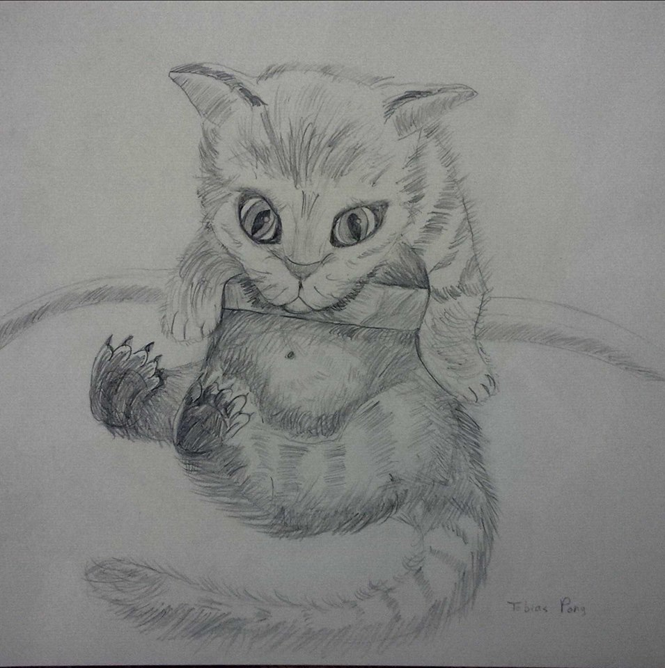
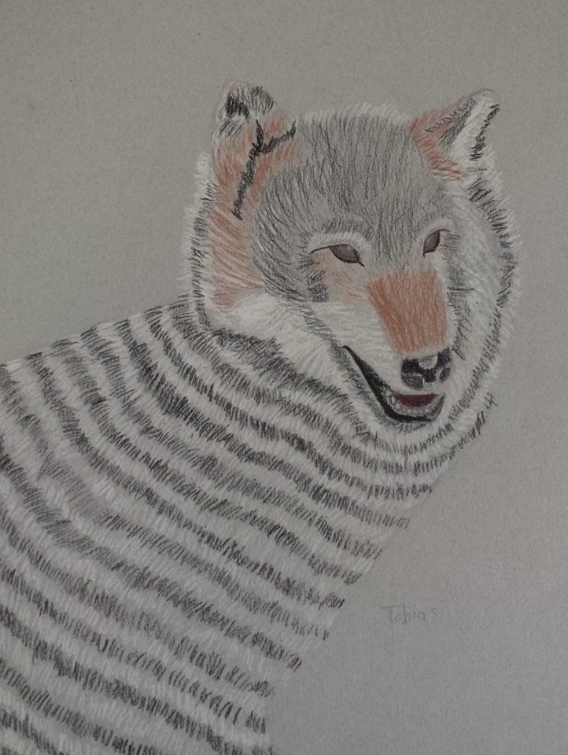
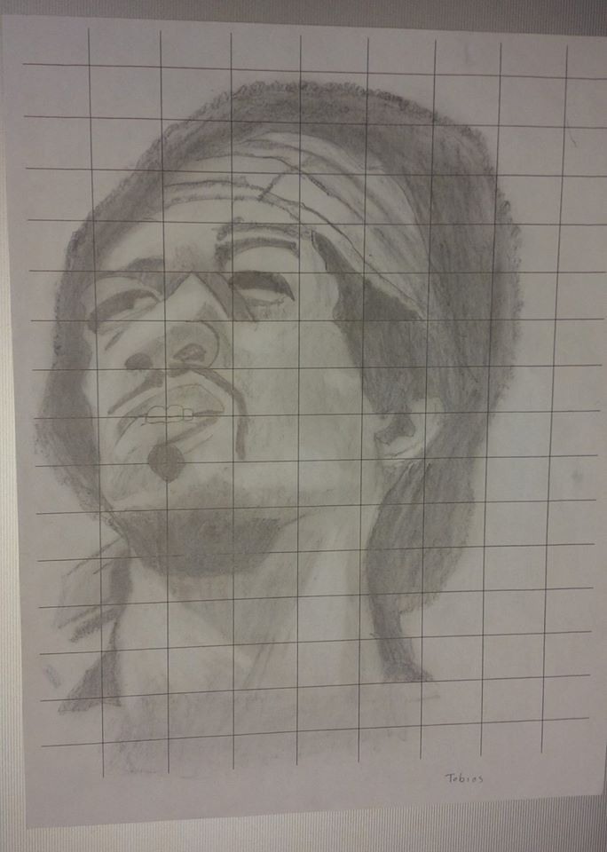

Now usually, I just draw something like a cool character in approximately 5 min,
but sometimes I actually put more effort in and take up 2 hours to draw something that I might find challenging.
Here are some of those drawings.
| Cat | Dog | Musician |
|---|---|---|
|  |  |  |
Something that I need to fix is that I am a perfectionist when it comes to art. Now what I mean by that, is that whenever I don't like what I draw, I am very tempted to just throw that drawing away, and yes, I draw on paper. Don't get me wrong, I don't do that every time I don't like a drawing in progress. I just feel very tempted to just waste the paper and throw away my drawing like it was a huge waste of my time. I am trying desperately to avoid this ongoing habit. Fortunately, I rarely draw due to my busy schedule, so I seldom have to worry about wasting a lot of paper.
Earlier, I mentioned that I sometimes take five minutes to draw something quick. Well, maybe that was a little bit of an exageration, just a little bit. I usually take twenty to thirty minutes to draw something that I become satisfied with. I usually just draw creatures that look like they came out of a fictional story and sometimes I like to go out of my comfort zone and draw something that I haven't grown accustomed to, such as an animal. When I was younger I used to love drawing characters from the medieval era such as knights. I would also draw dragons with relatively simple design.
An interesting thing about me is that I have a completely different style of drawing. This is especially for the illustrations that I create in a short amount of time. Usually, the normal artist would first create a skeleton and a frame for their drawing and then slowly add minor details, but for me it's different. For me, I draw the head of my character first, then I move downward from the upperbody to the feet and add details along the way. I would do this without any frame or skeleton.
In conclusion, drawing is one of my hobbies and hopefully this webpage has enlightened some mysteries about who I am. Now I'm sure there are people who are way better than me at drawing and can create art that makes mine look like a bunch of scribbles and that's completely fine. This webpage isn't meant for me to brag or show off my "skills" (which I barely have), it's just for people to get to know me better.
If you want to look at my other hobbies they're on chess and golf.
Return to the top of the page.